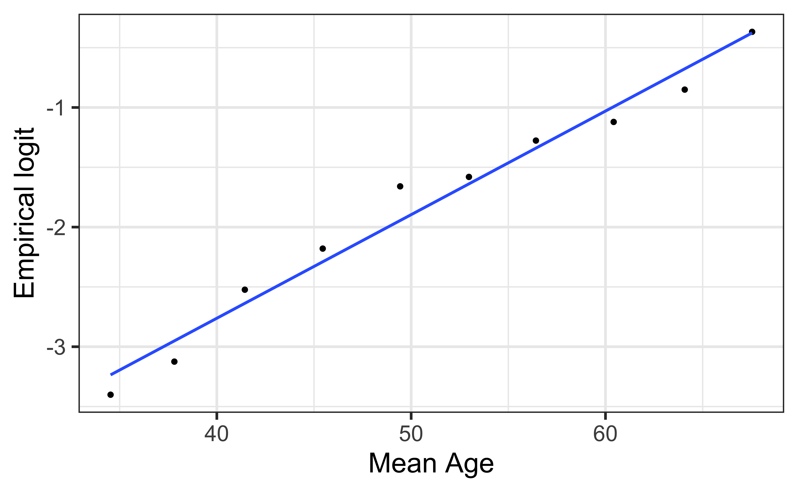

# load packages
library(tidyverse)
library(tidymodels)
library(openintro)
library(knitr)
library(kableExtra) # for table embellishments
library(Stat2Data) # for empirical logit
# set default theme and larger font size for ggplot2
ggplot2::theme_set(ggplot2::theme_bw(base_size = 20))LR: Inference + conditions
Announcements
Next project milestone: Analysis and draft in April 14 lab
Team Feedback (email from TEAMMATES) due Tuesday, April 8 at 11:59pm (check email)
HW 04 due Tuesday, April 8 at 11:59pm
Statistics experience due April 15
Topics
- Review inference for logistic regression
- Inference for coefficients in logistic regression
- Checking model conditions for logistic regression
Computational setup
Data
Risk of coronary heart disease
This data set is from an ongoing cardiovascular study on residents of the town of Framingham, Massachusetts. We want to examine the relationship between various health characteristics and the risk of having heart disease.
high_risk:- 1: High risk of having heart disease in next 10 years
- 0: Not high risk of having heart disease in next 10 years
age: Age at exam time (in years)education: 1 = Some High School, 2 = High School or GED, 3 = Some College or Vocational School, 4 = CollegecurrentSmoker: 0 = nonsmoker, 1 = smokertotChol: Total cholesterol (in mg/dL)
# A tibble: 4,086 × 6
age education TenYearCHD totChol currentSmoker high_risk
<dbl> <fct> <dbl> <dbl> <fct> <fct>
1 39 4 0 195 0 0
2 46 2 0 250 0 0
3 48 1 0 245 1 0
4 61 3 1 225 1 1
5 46 3 0 285 1 0
6 43 2 0 228 0 0
7 63 1 1 205 0 1
8 45 2 0 313 1 0
9 52 1 0 260 0 0
10 43 1 0 225 1 0
# ℹ 4,076 more rowsInference for coefficients
There are two approaches for testing coefficients in logistic regression
Drop-in-deviance test. Use to test…
- a single coefficient
- a categorical predictor with 3+ levels
- a group of predictor variables
(Wald) hypothesis test. Use to test
- a single coefficient
Review: Test coefficient for currentSmoker
| term | estimate | std.error | statistic | p.value | conf.low | conf.high |
|---|---|---|---|---|---|---|
| (Intercept) | -6.673 | 0.378 | -17.647 | 0.000 | -7.423 | -5.940 |
| age | 0.082 | 0.006 | 14.344 | 0.000 | 0.071 | 0.094 |
| totChol | 0.002 | 0.001 | 1.940 | 0.052 | 0.000 | 0.004 |
| currentSmoker1 | 0.443 | 0.094 | 4.733 | 0.000 | 0.260 | 0.627 |
Interpret the value for
currentSmokerin each column of the model output.The 95% confidence interval for
currentSmokeris [0.260, 0.627]. Interpret this value in the context of the data.
Conditions
Conditions for logistic regression
Linearity: The log-odds have a linear relationship with the predictors.
Randomness: The data were obtained from a random process
Independence: The observations are independent from one another.
Empirical logit
The empirical logit is the log of the observed odds:
\[ \text{logit}(\hat{p}) = \log\Big(\frac{\hat{p}}{1 - \hat{p}}\Big) = \log\Big(\frac{\# \text{Yes}}{\# \text{No}}\Big) \]
Calculating empirical logit (categorical predictor)
If the predictor is categorical, we can calculate the empirical logit for each level of the predictor.
heart_disease |>
count(currentSmoker, high_risk) |>
group_by(currentSmoker) |>
mutate(prop = n/sum(n)) |>
filter(high_risk == "1") |>
mutate(emp_logit = log(prop/(1-prop)))# A tibble: 2 × 5
# Groups: currentSmoker [2]
currentSmoker high_risk n prop emp_logit
<fct> <fct> <int> <dbl> <dbl>
1 0 1 301 0.145 -1.77
2 1 1 318 0.158 -1.67Calculating empirical logit (quantitative predictor)
Divide the range of the predictor into intervals with approximately equal number of cases. (If you have enough observations, use 5 - 10 intervals.)
Compute the empirical logit for each interval
. . .
You can then calculate the mean value of the predictor in each interval and create a plot of the empirical logit versus the mean value of the predictor in each interval.
Empirical logit plot in R (quantitative predictor)
Created using dplyr and ggplot functions.

Empirical logit plot in R (quantitative predictor)
Created using dplyr and ggplot functions.
heart_disease |>
mutate(age_bin = cut_interval(age, n = 10)) |>
group_by(age_bin) |>
mutate(mean_age = mean(age)) |>
count(mean_age, high_risk) |>
mutate(prop = n/sum(n)) |>
filter(high_risk == "1") |>
mutate(emp_logit = log(prop/(1-prop))) |>
ggplot(aes(x = mean_age, y = emp_logit)) +
geom_point() +
geom_smooth(method = "lm", se = FALSE) +
labs(x = "Mean Age",
y = "Empirical logit")Empirical logit plot in R (quantitative predictor)
Using the emplogitplot1 function from the Stat2Data R package
emplogitplot1(high_risk ~ age,
data = heart_disease,
ngroups = 10)
Empirical logit plot in R (interactions)
Using the emplogitplot2 function from the Stat2Data R package
emplogitplot2(high_risk ~ age + currentSmoker, data = heart_disease,
ngroups = 10,
putlegend = "bottomright")
Checking linearity
emplogitplot1(high_risk ~ age,
data = heart_disease,
ngroups = 10)
emplogitplot1(high_risk ~ totChol,
data = heart_disease,
ngroups = 10)
. . .
✅ The linearity condition is satisfied. There is a linear relationship between the empirical logit and the predictor variables.
Checking randomness
We can check the randomness condition based on the context of the data and how the observations were collected.
- Was the sample randomly selected?
- If the sample was not randomly selected, ask whether there is reason to believe the observations in the sample differ systematically from the population of interest.
. . .
✅ The randomness condition is satisfied. We do not have reason to believe that the participants in this study differ systematically from adults in the U.S. in regards to health characteristics and risk of heart disease.
Checking independence
- We can check the independence condition based on the context of the data and how the observations were collected.
- Independence is most often violated if the data were collected over time or there is a strong spatial relationship between the observations.
. . .
✅ The independence condition is satisfied. It is reasonable to conclude that the participants’ health characteristics are independent of one another.